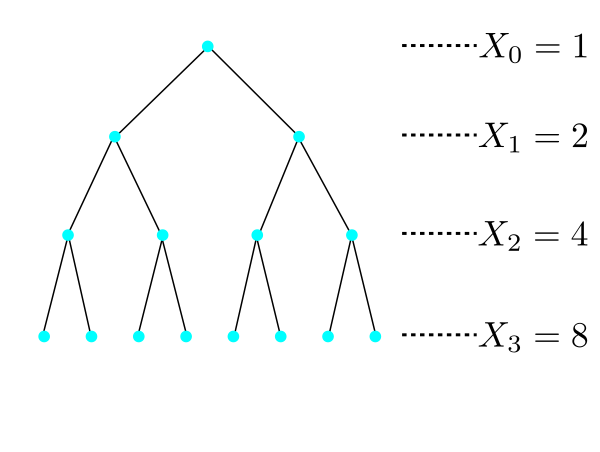

EXERCISE 1: Find the pgf of a random variable with $Binom(n,p)$ distribution.
EXERCISE 2: Find the pgf of $Poi(\lambda)$ distribution.
EXERCISE 3: Find the pgf of $Geom(p)$ distribution that takes all nonnegative integer values.
EXERCISE 4: Find the pgf of $Geom(p)$ distribution that takes all positive integer values.
EXERCISE 5: If $X$ has pgf $p(t),$ then what is the pgf of $X+1?$
EXERCISE 6: If $X$ is a random variable with pgf $p(t)$, then express $p(0)$ as the probability of some event in
terms of $X.$
EXERCISE 7: If $p(t)$ is a pgf, then what must the value of $p(1)$ be?
EXERCISE 8: Let $P(X=n) = \frac{1}{cn^2}$ for $n\in{\mathbb N}$ where $c = \sum_n \frac{1}{n^2} <
\infty.$ Find the pgf $p(t)$ of $X.$ Does it converge at
$t=\frac 12$? At $t=1?$ At $t=-1?$ At $t=2$?
By a power series we shall mean an expression of the form $a_0+a_1t+a_2t^2+\cdots,$ where
$a_0,a_1,a_2,...$ are fixed real numbers and $t$ is a variable taking values in ${\mathbb R}.$
For each value of $t\in{\mathbb R}$ the power series is an infinite series, which may or may not converge. Also, if
$\sum|a_k t^k|$ converges, then $\sum a_k t^k$ must also converge. This special case is called absolute convergence.
Any power series must converge at $t=0,$ because then only the first term remains. Any polynomial is also a power series,
which converges for all $t\in{\mathbb R}$, since only finitely many terms remain.
For any power series there is a unique number $r\in[0,\infty]$ such that:
if $r\in(0,\infty),$ then the power series converges for all $t\in (-r,r)$ and
diverges for all $t\not\in[-r,r].$
If $r=0,$ then the power series converges only at $t=0.$
If $r=\infty,$ then it converges everywhere
in ${\mathbb R}.$
This $r$ is called the radius of convergence of that power series.
If $r\in(0,\infty),$ the power series may or may not converge at $t = -r$ and $t=r.$ (depends on the
particular power series).
Thus, a power series defines a function
$$f(t) = a_0+a_1t+a_2t^2+\cdots,$$
which has domain $(-r,r)$ or $[-r,r)$ or $(-r,r]$ or $[-r,r].$
If $r>0,$ then the power series can be differentiated term by term any number of
times for $t\in (-r,r)$, i.e., if
$$
f(t) = a_0+a_1t+a_2t^2+\cdots,
$$
then
$$\begin{eqnarray*}
f'(t) & = & a_1+2a_2t+3a_3t^2+\cdots\\
f''(t) & = & 2a_2+6a_3t+12a_4t^2+\cdots\\
& \mbox{ etc}
\end{eqnarray*}$$
Each differentiated power series has radius of convergence $\geq r.$
Also, if the power series converges at $t=r$ or $t=-r$,
we may compute its one-sided derivative using term-by-term differentiation, i.e.,
if $f(t) = a_0+a_1t+a_2t^2+\cdots$ has radius of convergence $r\in(0,\infty),$ and
it converges at $t=r$, then
$$\lim_{h\rightarrow0+}\frac{f(r)-f(r-h)}{h} = a_1+2a_2r+3a_3r^2+\cdots.$$
Similarly, if the original power series converges at $t=-r,$ then
$$\lim_{h\rightarrow0+}\frac{f(-r)-f(-r+h)}{h} = a_1+2a_2(-r)+3a_3(-r)^2+\cdots.$$
In short, a power series is a nicely behaved thing, where all the intuitive things hold!
Proof:If $|t|\leq 1$, then $\sum_k |p_k t^k| \leq \sum_k p_k = 1$. So we
have absolute convergence.[QED]
So we can differentiate it term-by-term any number of times:
$$\begin{eqnarray*}
p(t) & = & p_0+p_1t+p_2t^2+\cdots,\\
p'(t) & = & p_1+2p_2t+3p_3t^2+\cdots\\
p''(t) & = & 2p_2+6p_3t+12p_4t^2+\cdots\\
p'''(t) & = & 6p_3+24p_4t+60p_5t^2+\cdots\\
& \mbox{ etc}
\end{eqnarray*}$$
Notice the pattern. Thanks to this pattern,
we can recover the probabilities from the pgf by repeated differentiation at $t=0$:
$$p_n = \frac{p^{(n)}(0)}{n!}$$.
Hence we get the following theorem.
Proof:Since $p(t)$ has radius of convergence at least $1,$ hence we may use term-by-term
differentiation any number of times at $t=1.$
For example, $p'(t) = \sum_0^\infty kp_k t^{k-1}.$ So $p'(1) = \sum_0^\infty kp_k = E(X).$
[QED]
EXERCISE 9: Show that pgf maps $[0,1]$ to $[0,1],$ i.e., if $p(t)$ is a pgf, then $\forall t\in[0,1]~~p(t)\in[0,1].$
EXERCISE 10: Think of a pgf where the radius of convergence is $\infty$.
EXERCISE 11: Think of a pgf where the radius of convergence is $1$.
EXERCISE 12: Show that a pgf must always be a nondecreasing function over $[0,1].$ Must it be a
strictly increasing function there?
EXERCISE 13: Show that a pgf must be a convex function (i.e., second derivative must be nonnegative) over $[0,1]$. When
will it be strictly convex?
EXERCISE 14: Show that $E(t^X) = p(t)$.
EXERCISE 15: Show that if $X,Y$ are independent random variables taking nonnegative integer values,
with pgfs $\xi(t)$ and $\psi(t)$, then the pgf of $X+Y$ is
$\xi(t)\psi(t)$.
(a) Let $Y =\left\{\begin{array}{ll}t^{x_0}&\text{if }X\leq x_0\\ 0&\text{otherwise.}\end{array}\right.. $
Then, for $t\in[0,1],$ we have $Y\leq t^X.$ (Remember that $x\mapsto t^x$ is a non-increasing function
for $t\in[0,1]$).
So $E(Y)\leq E(t^X).$ Now $E(Y) = t^{x_0}P(X\leq x_0).$
Hence the result.
(b) Let $Z =\left\{\begin{array}{ll}t^{x_0}&\text{if }X\geq x_0\\ 0&\text{otherwise.}\end{array}\right.. $
Then, for $t\geq 1,$ we have $Z \leq t^X.$
Hence the result follows as in (a).
Imagine a cell that will split into two cells after exactly one minute. Then, after one more minute, each of these two cells
will again split into two. If it goes on like this, then we shall have $2^n$ cells in the
$n$-th generation (the initial cell belonged to generation 0).

Here $X_n$ is the number of cells in the $n$-th generation. Thus, $X_n = 2^n$. Also,
notice that when a cell splits into children, the original cell ceases to exist.
This
branching process is a deterministic
one. Now let us consider a random branching process. Here again we start with a single cell in generation 0. Thus $X_0 = 1$.
After a minute this cell splits into a random number of cells. The number may be any
nonnegative integer. In particular, we also allow the number to be 0 or 1 with the following interpretations:
If the number is 0, then the
original cell has died without leaving any children.
If the number is 1, then the original cell
just continues into the next generation.
After one more minute each cell in generation 1 will independently split into children following the same distribution. And
the process will continue.
Notice that each cell behaves in an iid fashion using the same distribution to decide the number of children. This common
distribution is called the progeny distribution of the branching process. Since $X_0=1$, the progeny
distribution is the same as the distribution of $X_1.$
The progeny distribution is a distribution on the set of nonnegative integers. Let $p_k$ be
the probability that it
assigns to $k\in\{0,1,2,...\}.$
Obviously, we need $\sum_0^\infty p_k = 1.$
In the above animation we used the following progeny distribution:
We want to find the extinction probability for this process.
By extinction we mean the event that $X_n=0$ for some $n\in{\mathbb N}$. Notice that if some $X_n=0$, then we must
have $X_{n+1}= X_{n+2}=\cdots = 0$ also. So the extinction event is
$$\bigcup_{n\in{\mathbb N}}\{X_n=0\}.$$
Since $\{X_1=0\}\subseteq \{X_2=0\}\subseteq\cdots, $ hence the extinction probability is
$\lim_{n\rightarrow\infty} P(X_n=0)=\theta$, say.
We want to express $\theta$ in terms of the progeny distribution.
In the simple cases, where $p_0=0$ or $p_0+p_1=1$, we either have no death or no birth.
But if $p_0>0$ and also $p_n>0 $ for some $n\geq 2$, then we have both deaths and births, and
the interaction between them
becomes rather complicated. That is where probability generating functions come to our help.
Let $\xi(t)$ be the pgf of the progeny distribution. In other words,
$$\xi(t) = p_0+p_1t+p_2t^2+\cdots.$$
Since $X_0=1,$ hence the pgf of $X_1$ is also $\xi(t).$
The next theorem is of central importance.
Proof:
$\xi_2(t) = E(t^{X_2}) = E\big( E(t^{X_2}|X_1) \big)$ by the tower property.
Let us compute $E(t^{X_2}|X_1=k)$ for $k=0,1,2,... $. In particular we shall focus on $k=3$ (the other cases
being similar). Thus we are in a situation where the first generation consists of the 3
individuals, and the second generation
consists of their children.
The second generation colour coded by parents
We have colour-coded the second generation individuals by the their parents. Let $Y_i$ be the contribution of the $i$-th
individual of the first generation. We have assumed that each individual splits identically and independently
of the rest. So $Y_1, Y_2, Y_3$ are IID random variables.
So $E(t^{X_2}|X_1=3) = E(t^{Y_1+Y_2+Y_3}|X_1=3) = E(t^{Y_1+Y_2+Y_3})$, since $Y_i$'s are
independent of $X_1$ (number of my children has nothing to do with the number of my siblings!).
Now $E(t^{Y_1+Y_2+Y_3}) =E(t^{Y_1}t^{Y_2}t^{Y_3}) = E(t^{Y_1})E(t^{Y_2})E(t^{Y_3})$, since
$Y_i$'s are independent (number of my children has nothing to do with how many children my siblings have!).
Finally, $E(t^{Y_1+Y_2+Y_3}) =E(t^{Y_1})E(t^{Y_2})E(t^{Y_3}) = \xi(t)\xi(t)\xi(t) =
\big(\xi(t)\big)^3$, since $Y_i$'s all have the same distribution.
Clearly, the $3$ in the exponent came from our choice of $k$. So, in general,
$E(t^{X_2}|X_1=k) = \xi(t)^k$ for $k=0,1,2,..$.
Thus, $E(t^{X_2}) = E\big(E(t^{X_2}|X_1) \big) = \sum_{k=0}^\infty \xi(t)^k p_k =\xi(\xi(t))$.
Notice that convergence is not a problem, because we have assumed $|t| < 1$, and so $|\xi(t)| < 1$ as well.
[QED]
In general, we have the following theorem.
Proof:
The proof is by induction on $n.$ We have already seen the $n=1$ and $n=2$ cases. The inductive step will
be done in the problem set below.
[QED]
Now $P(X_n=0) = \xi_n(0)$.
So the extinction probability is $\theta = \lim_n \xi_n(0)$.
Clearly, since $\xi(t)$ is a continuous function, $\theta = \xi(\theta)$. In other words, $\theta$ must
be a fixed point of the pgf.
How many fixed points can $\xi(t) $ have? Surely $1$ is a fixed point, since $\xi(1) = 1$. If
it is the only one, then
$\theta$ must be $1$.
EXAMPLE 2: If $p_0=0.1, p_1=0.5$ and $p_2=0.4$ (so the other $p_k$'s are all zeroes),
then the graph of $\xi(t)$ looks as shown below.
You can notice two fixed points (i.e., points where the black curve cuts the red diagonal). One of the fixed points is at
$t=1$. The other is in $(0,1)$.
■
Is it possible to have a case where there are three or more fixed points, i.e., where $\xi(t)$ intersects the $y=x$
line at more than two points? No, because either $\xi(t)\equiv 1$ or it is strictly
increasing and strictly convex.
So the only question that remains to be settled is: In case of two fixed points, which one will
$\theta$ be equal to?
The answer is provided by the theorem below.
Proof:We shall prove it step by step in the problem set below.[QED]
Let us wrap up our findings. There are only two possibilities:
exactly one fixed point (which must be
$1$) or exactly two. In the first case, $\theta=1$ and in the second it is the smaller fixed point.
It will be nice if we have a quick way to know (based on the $p_n$'s) which case we are in.
The two cases are shown below graphically:
One simple way to distinguish them is by $\xi'(1)$. In the first case $\xi'(1) \leq 1$ and in the other $\xi'(1) > 1$.
Just a little point here: we know that $\xi(t)$ converges over $[-1,1]$, but may not converge beyond $1$.
So when we talk about the derivative at $1$, we mean the left hand derivative. But fortunately, the term by term differentiation
rule works for finding this one-sided derivative as well. So $\xi'(1) = p_1+2p_2+3p_3+\cdots$ (may be $\infty$).
So the final answer is:
If $\xi'(t) \leq 1$, then $\theta=1$.
If $\xi'(1)> 1$, then $\theta$ is the unique fixed point of $\xi(t)$ for $t\in(0,1)$.
It is not easy to arrive at this answer without using pgf.